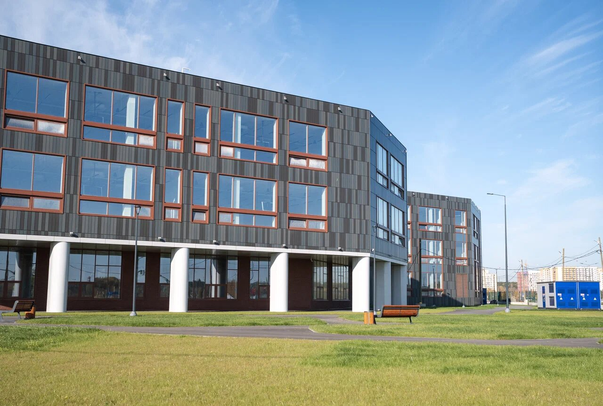
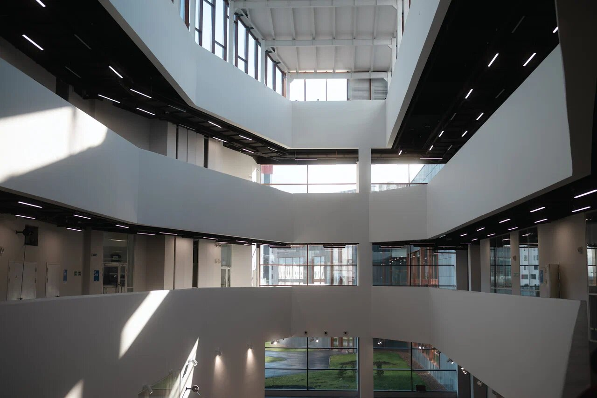

Университет
Основан в 1920 году. Сегодня это 50 000 студентов, 13 институтов и 15 учебных корпусов в Екатеринбурге.
Университет в цифрах
- основан
- 1920
- студентов
- 50 000
- научно-педагогических работников
- 4 400
- институтов
- 13
- научно-исследовательских лабораторий
- 164
- бюджетных мест на 2026 год
- 9 855
Данные раздела «Об Уральском федеральном в цифрах» на urfu.ru.
История
19 октября 1920
Декрет об учреждении Уральского государственного университета: университет европейского типа из шести институтов.
Основные даты8 января 1921
Открытие. На одиннадцати факультетах учатся 2 501 студент, работают 293 педагога.
Как всё начиналось1924
Первый выпуск инженеров: шесть специалистов.
Выпускники2020
Университет отметил столетие. Основные даты по десятилетиям собраны в истории.
Все десятилетия
 Главный учебный корпусул. Мира, 19
Главный учебный корпусул. Мира, 19

Новый кампусУчебные корпуса и общежития
Виртуальные турыКорпуса, лаборатории, спорт- учебных корпусов
- 15
- общежитий, в них более 13 800 мест
- 18
- спортивных объектов
- 20
- мультимедийных аудиторий
- 438
Рейтинги
- место в Национальном рейтинге университетов, общий зачёт
- 9
- место в рейтинге RAEX-100, 2024
- 11
- место в рейтинге Forbes «100 лучших российских вузов», 2025
- 14
В международных рейтингах: QS World University Rankings — 504 место, Times Higher Education — 801–1000, Шанхайский рейтинг ARWU — 701–800, в нём всего четыре вуза России.
Данные раздела «Позиции в рейтингах» на urfu.ru.
Руководство и структура
«Университет делают люди. Энергия талантливых студентов, опыт преподавателей, творческий подход научных сотрудников, поддержка выпускников и партнёров ежедневно вносят вклад в развитие вуза, края, страны и мира».
Илья Николаевич ОбабковРектор
Документы и сведения
Все разделы- Сведения об образовательной организации
- Официальные документы
- Реквизиты
- Программа развития
- Политика в области качества
- Независимая оценка качества образования
- Противодействие коррупции
- Закупки
- Обращения граждан
- Контакт-центр, звонок по России бесплатный
- 8 800 100-50-44
- Приёмная комиссия
- +7 (343) 375-44-74
- Пресс-служба
- news@urfu.ru
- Адрес
- Екатеринбург, ул. Мира, 19